Как составить контент-план? Рассмотрим на примере контент-плана для магазина одежды.
Согласно исследованию Social Sprout, 89 % пользователей, которые подписаны на определенный бренд в соцсетях, совершают покупку у этой компании. Более того, 85 % рекомендуют ее близким, а 84 % предпочтут именно этот бренд конкурентам. Это ли не повод хорошенько заняться своим контент-планом и, как следствие, развить лояльность клиентов и повысить продажи.
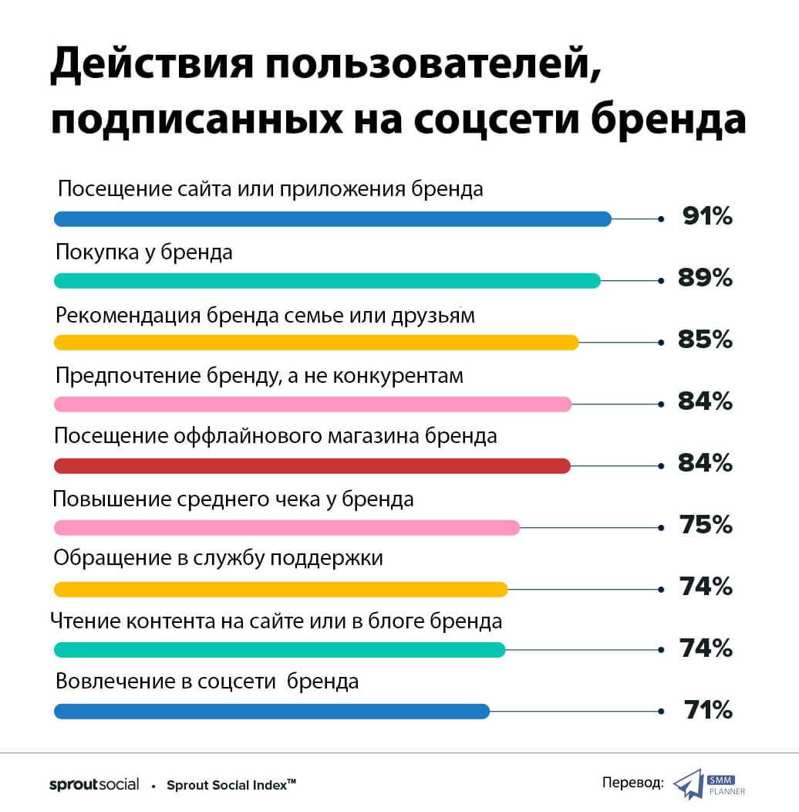Типы контента магазина одежды
-
Демонстрация ассортимента
Это, пожалуй, самый очевидный тип постов для контент-плана бренда одежды. В нем вы можете рассказать о качестве ткани, особенностях кроя, доступных расцветках. Кроме того, укажите есть ли товар в наличии, как его можно померить или заказать, стоимость доставки.
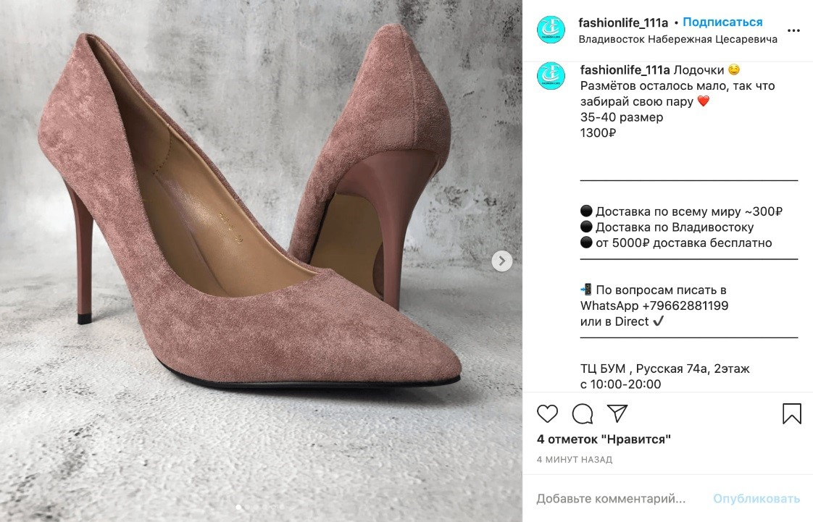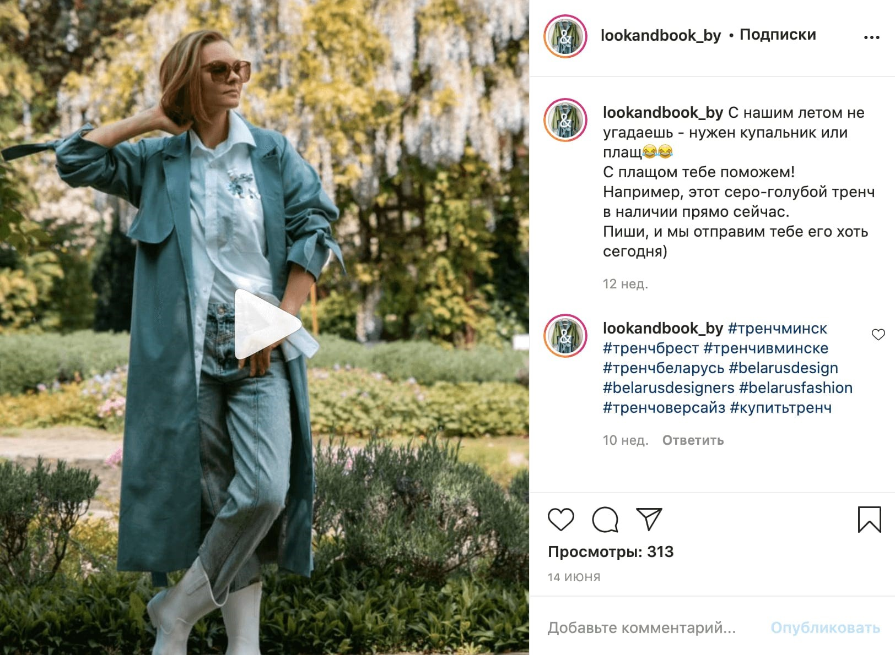Если вы хотите вести аккаунт магазина в более живом и блоговом стиле, то можете сопроводить фотографии более легкими и игривыми текстами. Представьте, что это ваша личная страница, а пишите вы для небольшого круга друзей.
Что касается указания цены, раньше такие посты расценивались как реклама, однако с 2017 года контролирующие органы сняли это ограничение. Писать стоимость или нет – решение ваше, однако микроисследование показало, что 34 из 40 покупателей негативно относятся к таким публикациям, а 50 % никогда не покупает на страничках без цены.
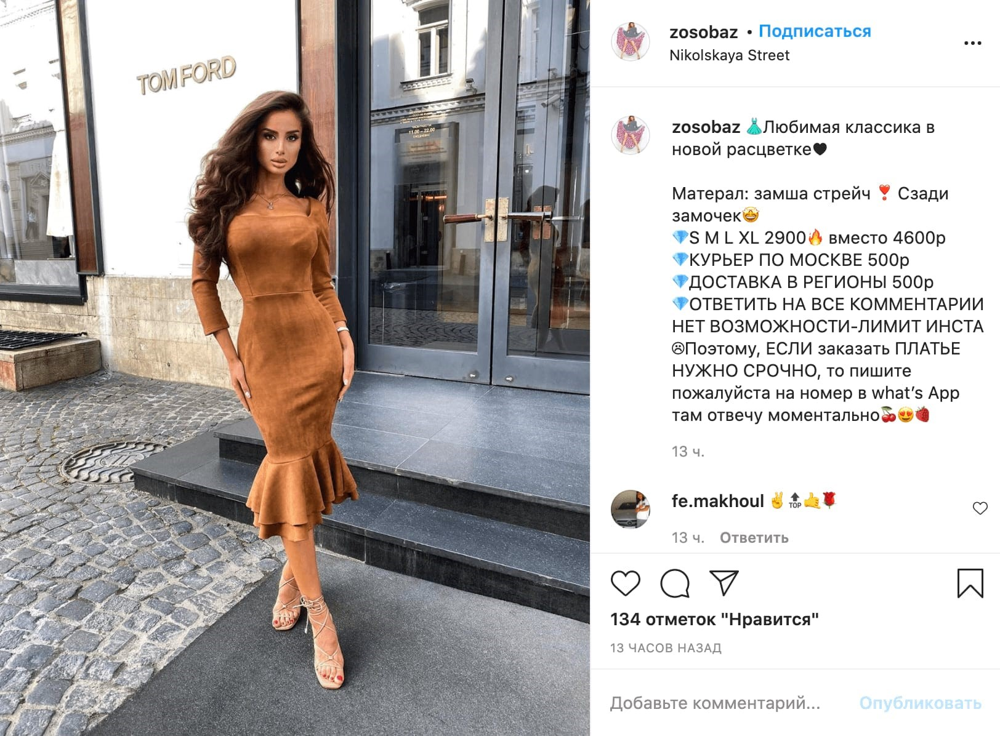 -
История бренда
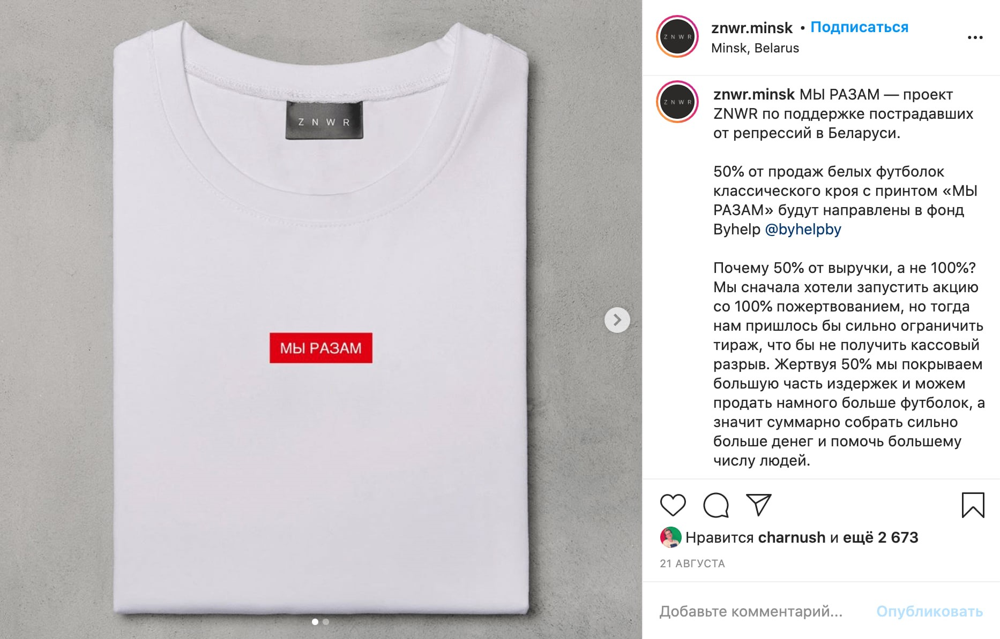Если вы сами являетесь дизайнером, расскажите об истории создания определенной модели, ваших источниках вдохновения, целях на будущее. Также пользователям будет интересно прочесть, с чего все начиналось, какие коллаборации у вас проходят с другими фирмами.
В данном случае не бывает слишком маленьких историй, ведь ведение аккаунта бренда – это, по сути, его блог, поэтому чем естественнее и проще по духу будут посты, тем легче будет аудитории почувствовать, что они общаются с добрым другом.
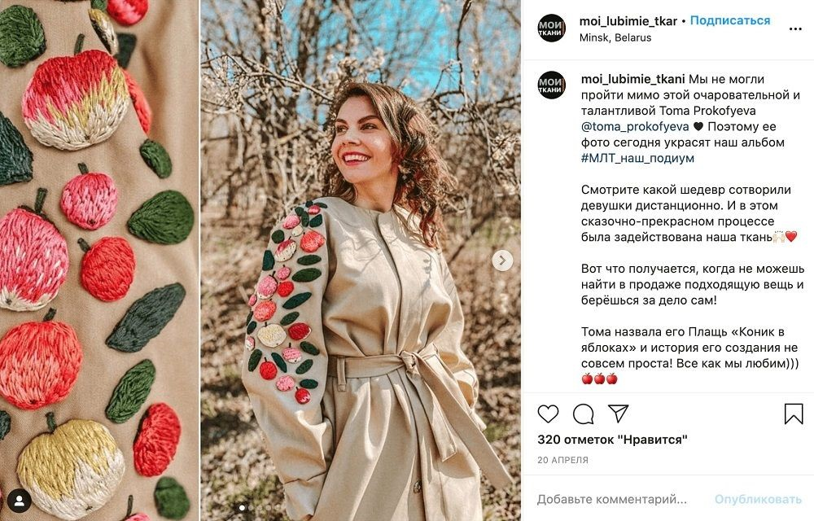 -
Новости и события
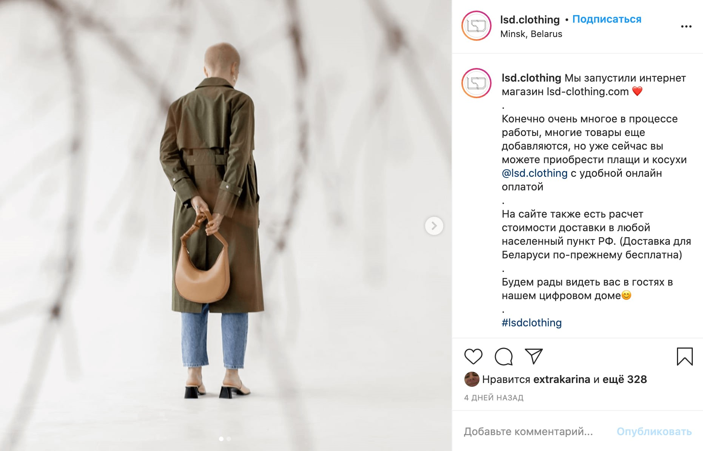К этой категории постов можно отнести все новости бренда: будь то открытие еще одного магазина, создание сайта или новое зеркало во весь рост в примерочной.
Также подумайте, может, вы хотите анонсировать какие-то оффлайн мероприятия. Будь то мини-вечеринки для постоянных клиентов или просто новый завоз.
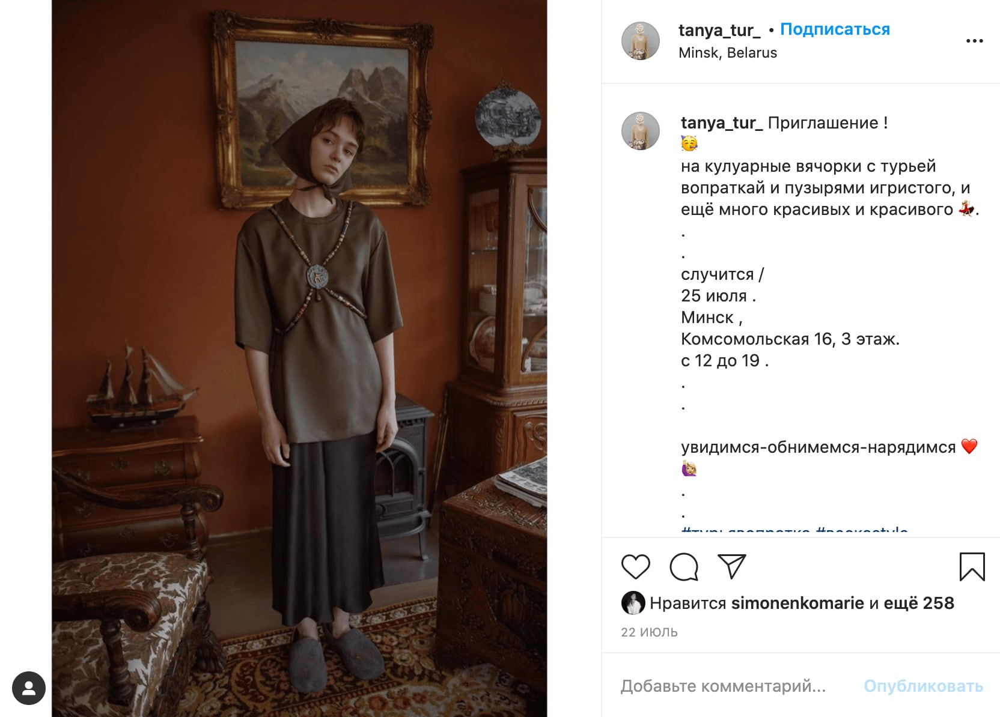 -
Модные луки
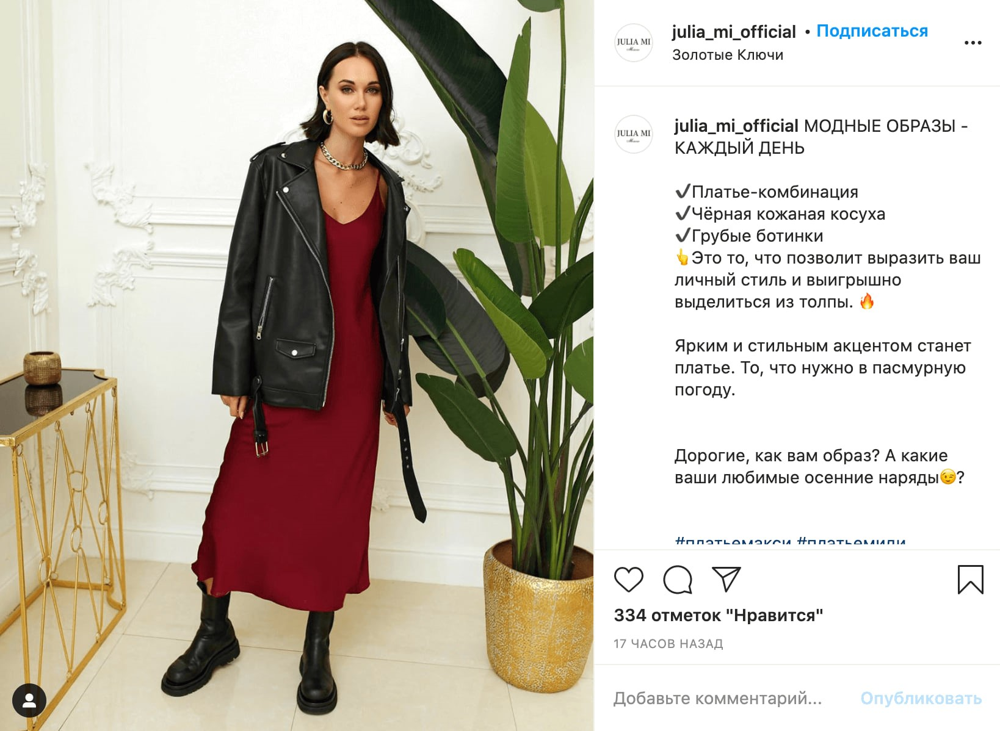Какой контент-план Инстаграма одежды можем обойтись без модных советов. Расскажите подписчикам, какие тренды в этом сезоне и с чем стоит носить вашу одежду.
Можете попросить пользователей отмечать вас на фото и публиковать их модные луки. Это прекрасно покажет, как смотрится ваша одежда на обычных людях и разных фигурах, а также поможет прокачать доверие к бренду. Если у вашего бренда есть ресурс – подарите лучшему луку месяца какой-то приз или промокод.
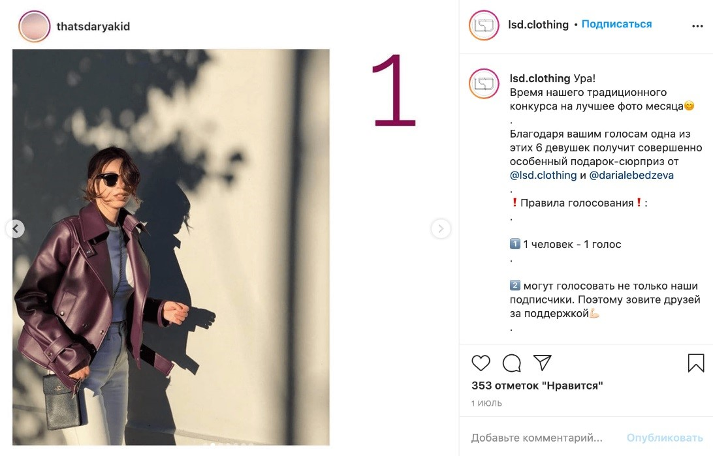 -
Отзывы клиентов

Еще один способ продемонстрировать, что вам можно доверять – это публикация отзывов клиентов. Можете прямо записывать за покупателями в примерочной и собирать их восторженные комментарии из Директа.
-
Скидки
Вовремя узнавать о скидках – одна из причин, почему на вас решили подписаться. Так что не расстраивайте своих подписчиков и не скрывайте от них эту важную информацию. К тому же это отличный повод напомнить о вашем ассортименте и даже скидка 15 % может быть достаточной, чтобы привести к покупке.
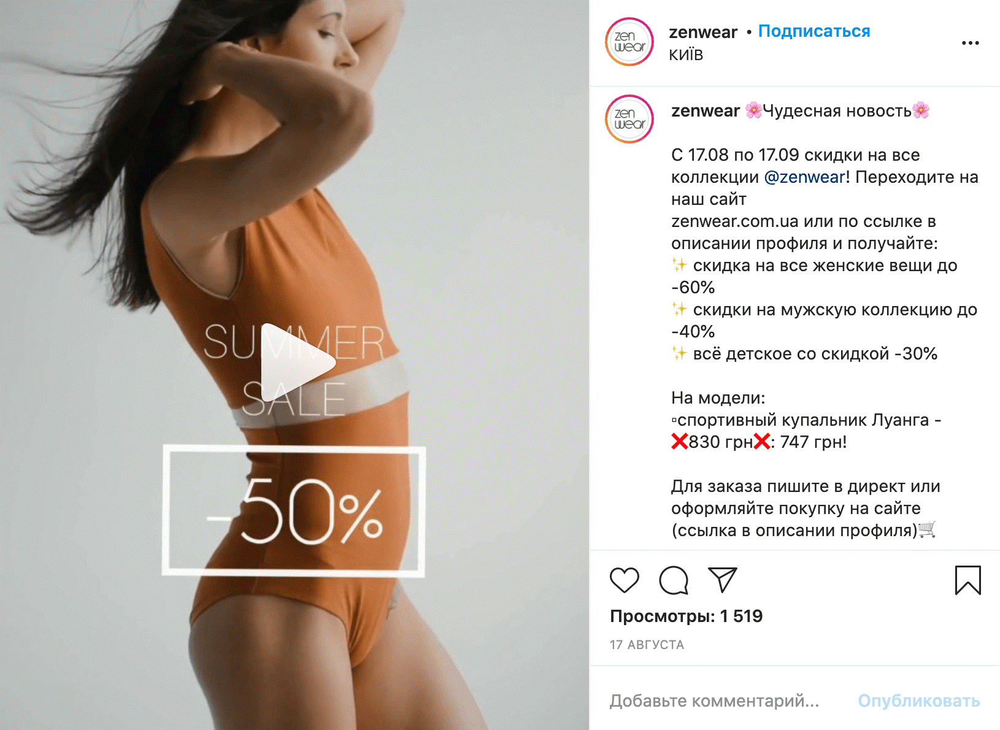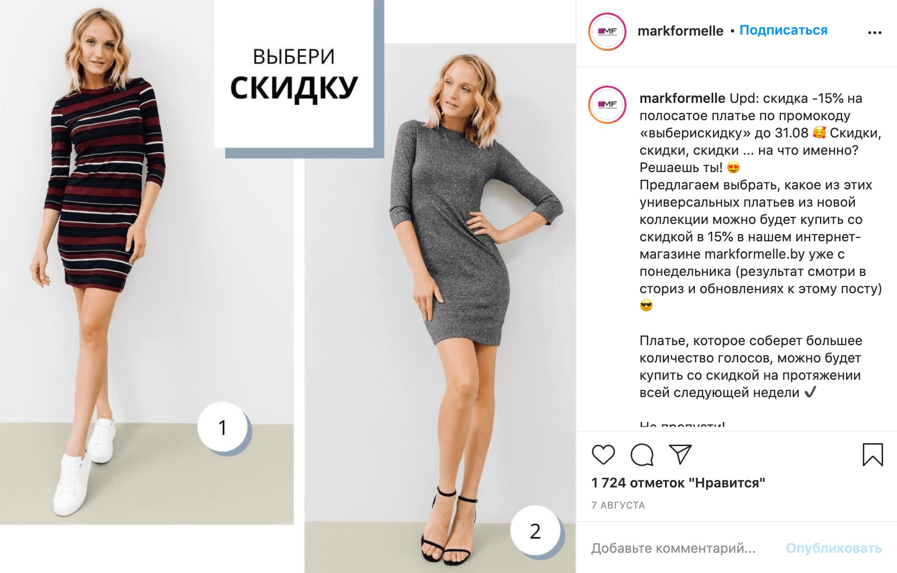Помимо этого, вы можете использовать свою площадку для исследования пользовательского мнения. Например, предложите пользователям проголосовать, на какую модель они хотят получить скидку.
-
Конкурсы
В эту категорию попадают различные посты, которые призывают подписчиков в активным действиям. Самый частый пример – это конкурс. Розыгрыш комплекта.

-
Образовательно-развлекательный
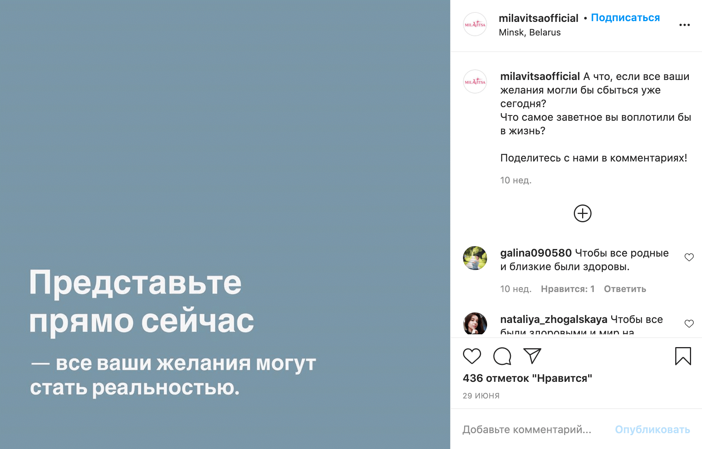Также вы можете продемонстрировать, что вам интересны подписчики сами по себе и сделать пост, направленный на создание комьюнити (обьединение людей , имеющие общие интересы).
На что обратить внимание при создании контент-плана
-
Планируйте равномерно
Сначала определитесь с теми постами, которые выйдут у вас обязательно, а затем сбалансируйте их недостающими типами контента. Чтобы каждый раз не придумывать все с нуля – введите постоянные рубрики и следуйте им. Условный контент-план для Инстаграма детской одежды выглядит так:
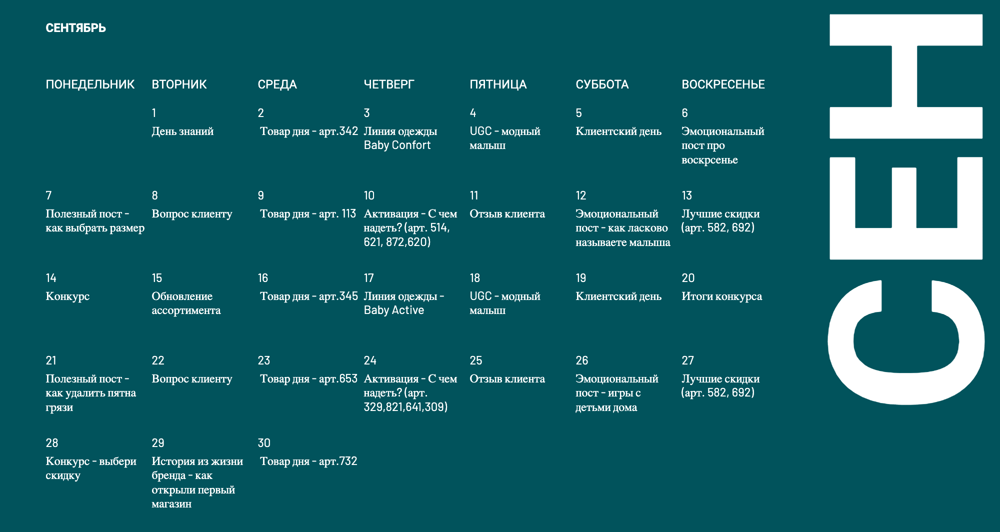 -
Используйте все типы постов
Не забывайте, что сторис – это такая же важная часть публикаций, как и посты. Поэтому при составлении контент-плана включите и их.
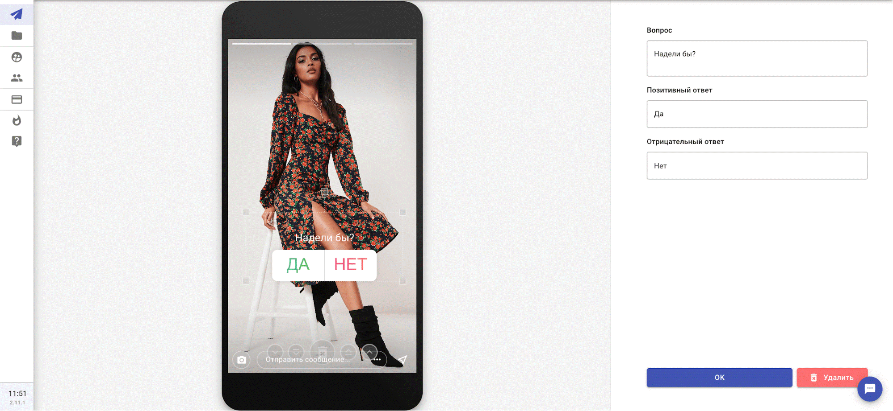 -
Используйте шоппинг-теги в Инстаграм
С недавним обновлением в Россию наконец пришли шоппинг-теги. Они позволяют переходить с фото на карточку товара. Это новая функция и всем доступна. Она выглядит как значок сумочки на фото, нажимая на него, тебя перекидывает либо на сайт, либо сразу в корзину.
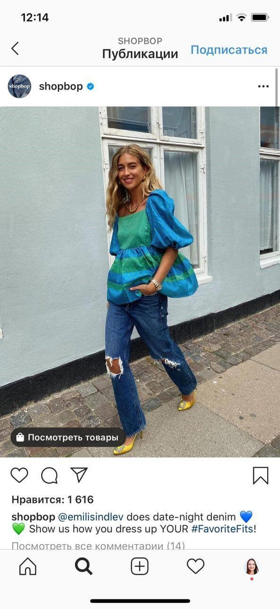 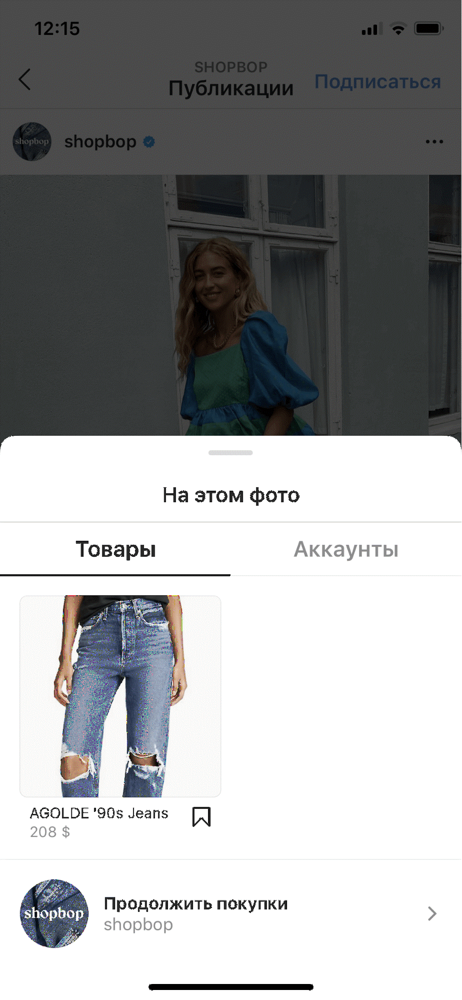 -
Обращайте внимание на визуал
Одно дело – расписать план постов на месяц, придумать классный контент, вовлечение и каналы взаимодействия с подписчиками. Другое – а какие должны быть фотографии и картинки? Можно просто сфотографировать изделие на манекене или вешалке? А освещение?
Нельзя забывать о визуальной составляющей контент-плана. Грамотно продуманный визуал все еще играет ключевую роль. Тем более если речь идет о внешнем виде продукта.
Первое, о чем нужно помнить – гармоничность ленты. Не стоит делать однотипные фотографии с одним ракурсом. Как и не стоит обрабатывать снимки всегда по-разному. Следуйте обработке, которая отвечает специфике магазина одежды.
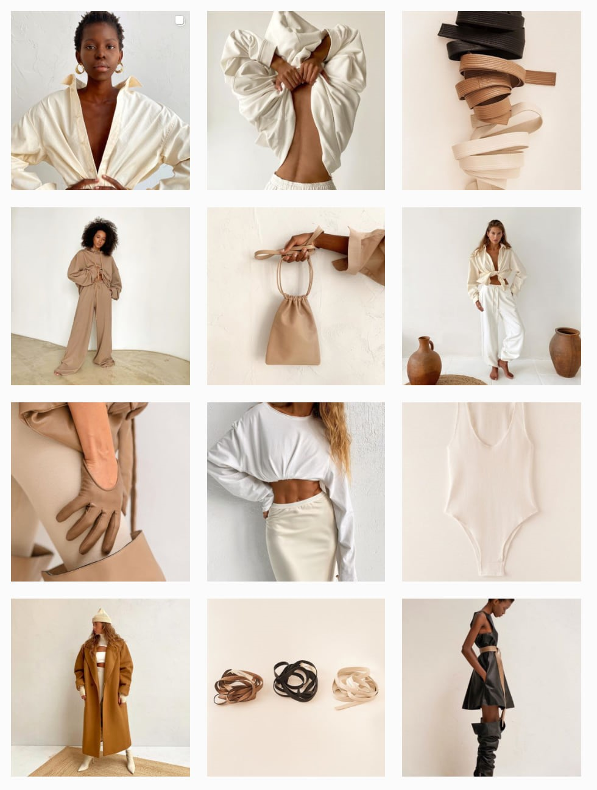В данном примере мы видим и крупные планы аксессуаров, и модель в одежде в полный рост, и средний план. Самое главное – чередовать кадры. Не следует выкладывать подряд посты с одним планом или ракурсом. В гармоничном разнообразии кроется интерес.
Второе, но не менее важное, – сам кадр. Важно показать изделие в выигрышной позиции. Какие факторы на это влияют? Качество фотографии, освещение, ракурс. Здесь лучше сделать несколько кадров с разных сторон и выбрать тот, который лучше всего показывает образ в целом или отдельный элемент одежды.
Перечисленные выше нюансы нужно помнить как при самостоятельном создании фото контента, так и при поручении работы фотографу и составлению ТЗ для съемочной команды. Ведь публиковать и выбирать фотографии будете именно вы.
Для того чтобы вкус тренировался и вы всегда знали, какую фотографию опубликовать – анализируйте конкурентов, смотрите аккаунты брендов с большим именем и интересуйтесь модой.»